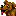
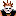
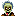
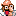

The sprites make up all of the "objects" that are in the level. This includes items, victims, and the three types of monsters. There is one tool for editing each type of sprite
 Item Tool: Edits items.
Item Tool: Edits items.
 Victim Tool: Edits Victims.
 Non-Respawning Monster Tool: Edits monsters that don't come back after they are killed.
 Respawning Monster Tool: Edits monsters that do come back after they are killed.
 Boss Monster Tool: Edits the special boss monsters.
Sprites have selections much like the background does, but certain sprites are selected instead of regions. All operations done to sprites affect all of the selected ones.
All sprite tools work in almost the same way. Here is how to use them:
- Click the mouse on the background (not on a sprite) and drag to select sprites within a rectangle. This replaces the selection unless modifier keys are used.
- Click a sprite that isn't selected to replace the selection with that sprite. The same modifier keys apply to this.
- Click on a sprite that is selected and drag to move all selected sprites.
- Hold Shift while moving sprites to lock them to the 8x8 pixel grid.
- Hold Ctrl and click on a sprite and drag to clone that sprite. If a selected sprite is cloned, all selected sprites are cloned with it.
- Hold Ctrl and click on the background to create a new sprite. The type of sprite selected in the left panel is used.
- Click a new sprite type in the left panel to change all selected sprites to that type.
- Press the delete key on your keyboard to delete all selected sprites.